Padlet
Padlet has been retired
Padlet has now been withdrawn from the University’s offering of supported platforms.
Training session: Exploring alternatives to Padlet
We recently offered a training session that presented alternative options to Padlet for key teaching and learning scenarios. The alternatives we included are outlined in full below, and the recording and resources are also available to UoY users from the following links:
What will happen to my account and boards?
You may still be able to login, but your account and all associated Padlet boards will be “read only”, and you will not be able to make new boards or edit existing boards.
You will still be able to transfer boards from your university account to a personal account. See Padlet's guidance on transferring Padlets for help with this process.
Personal Accounts
If you are planning to use a personal account to teach with, please be aware of the University's guidance on use of third-party tools that are not covered by a university licence, as there may be data protection issues which warrant a review.
We are also aware that a personal account will give you access to AI functionality that has not been cleared for usage by our IT department, and consequently has been blocked off for our University service. We strongly recommend that these AI tools are not used with students on a personal account.
If you do intend to use these tools, you will need to ensure that any AI usage complies with the University’s guidelines on Generative AI Tools.
Alternative tools to replace Padlet
There isn't a direct replacement for the full Padlet functionality, but there are many tools suitable for particular use cases. These tools also avoid the accessibility issues associated with Padlet.
University staff who have questions or who would like to discuss specific options are encouraged to contact us.
You can also consult the guide to choosing the right web platform for your content.
Tip
Do not use non-supported external tools; there is no University support available, and they have not been assessed for data security, service reliability or accessibility compliance. This poses a risk to users.
Gathering responses or summaries (for plenary)
Padlet can be used to collect individual or group responses to tasks and questions for review with the wider group. These often use the Column layout. Example uses include gathering:
- summaries of group discussion
- responses to short in-class questions/tasks
- student-created quiz questions for their peers
Example Padlet: brief groupwork discussion summaries
In this Accessibility scenario for VI workshop task, workshop participants discussed a set of scenarios in groups and summarised points in a Padlet. These were then reviewed live in the session with the wider participants.
The Padlet is in Column format, with one column per group. Before the session, each scenario is added as a post in the relevant column. During the task, groups discuss their scenarios and add comments on the relevant scenario post. This can then be shown on screen for synchronous review or shared for asynchronous review.
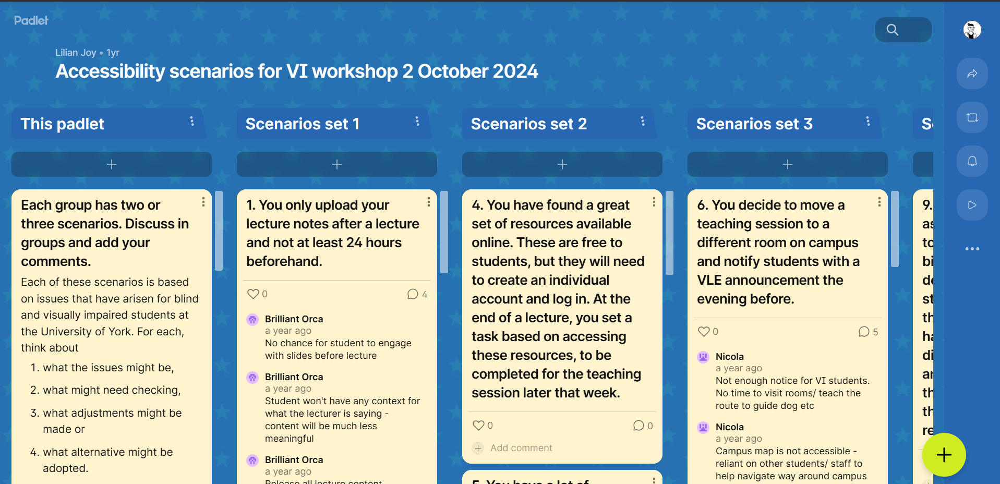
Alternative tool: Mentimeter (text comments only, anonymous, no replies)
- The Mentimeter polling tool can be used to collect short text responses (up to 200 characters).
- Responses can be collected and shared on screen in a live session, or embedded in your Ultra site for asynchronous use.
- Use one open question slide (word cloud and open ended) per question.
- For large numbers of responses, there is an AI tool available to group and summarise responses
- No login is required, and responses are anonymous. It is not possible to directly reply to other comments.
Reworking the example Padlet
A Mentimeter presentation can be used to collect groupwork summaries, with an open ended question slide for each scenario. In the Settings menu, set the Menti type to Survey and Allow multiple responses per device so participants can move to the relevant scenario slides and add their responses.
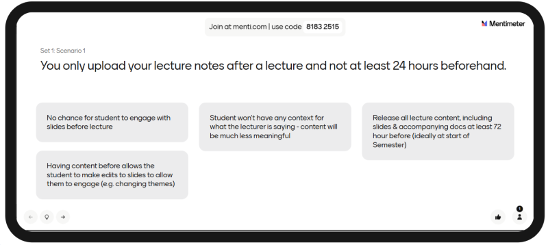
Alternative tool: Ultra Discussion (text and other content, optional anonymity, replies possible)
- The Ultra Discussion tool can be used to collect longer text responses, images and other content.
- Requires an Ultra VLE site accessible to the participants (eg. a module site)
- This tool is particularly suited to collecting and reviewing asynchronous responses, but can be used in live sessions.
- Create a Discussion in the module Ultra site, then add Instructions as the initial post and one post per question.
- You can allow anonymous responses. Students and staff can reply directly to other comments.
- Discussions can be visible to all students, or can be split for specific groups.
Reworking the example Padlet
An Ultra Discussion could be useful in this case if staff or students need to respond to the summaries. Set up the Discussion with one post (thread) per scenario. Students reply to the post with their comments. Students and staff can reply to these comments.
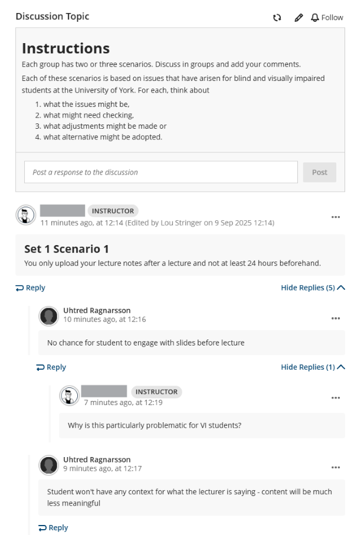
Gathering questions or comments (for tutor response)
Padlet is often used to collect anonymous questions or comments. These often use the Wall, Column or Grid layouts. Posts and replies are visible to other students. Example uses include:
- Q&A on module content or assessment
- collecting questions during presentations
- collaboratively selecting topics for a revision session
These are sometimes handled asynchronously, and sometimes during a live session. Suitable alternatives depend on when comments are gathered, and when/how they will be reviewed.
Example Padlet: reviewing responses in a live session
This Q&A Sharing experiences with Blackboard Ultra Padlet used the Column format to gather questions relating to different presentations during a live staff workshop. Questions were responded to live after each presentation, either verbally or in the Zoom chat. The same concept could be used to gather questions or comments before a session, to review live.
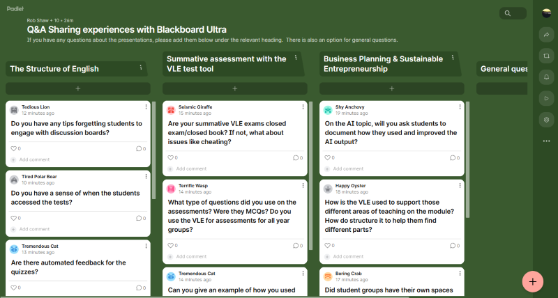
Alternative tool: Menti Q&A (synchronous collection)
- The Mentimeter Q&A tool is an excellent method for gathering and reviewing questions (up to 200 characters) in live sessions.
- Contributions are anonymous, with optional moderation and the ability to hide submissions as they come in.
- Questions are displayed in a large format so they are easy to see in a live session.
- Users can upvote and react to questions with emojis, helping to avoid duplicates and identifying key issues.
- You can't respond to contributions within the Q&A slide, so this tool is best for live review.
Reworking the example Padlet
To collect and review questions in a live session, Menti Q&A is the best tool available to replace this Padlet. Create a Menti presentation and add a Q&A slide. Share the access code with participants and display on screen.
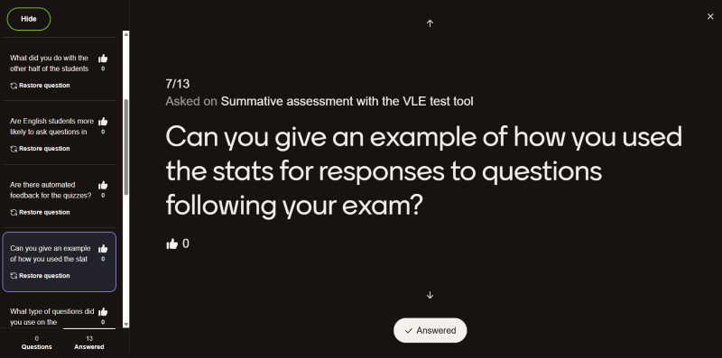
Alternative tool: Google Forms (asynchronous collection)
- Google Forms offers a quick, easy to engage with option for pre-session surveys, eg. for needs analysis - when you want to collect responses for discussion or sharing later, especially to elicit comments on multiple topics.
- Contributions can be made anonymously. There are multiple question types; multiple choice, open text etc.
- Results are immediately visible to creator, with the option to share responses with participants for review on their own devices.
- You can't respond to contributions within the Form, so this tool is best for live review.
A Google Doc may also be a simple alternative if you just need to provide a place for users to add content.
Reworking the example Padlet
A Padlet in the same format as the above example was used to gather experiences of online teaching for needs analysis before a training session. Google Forms could replace this to collect questions in advance for live review. Create the Form in advance, add question(s) and share with participants. You can screenshare responses, or switch on 'View Results Summary' and share the results link with participants.
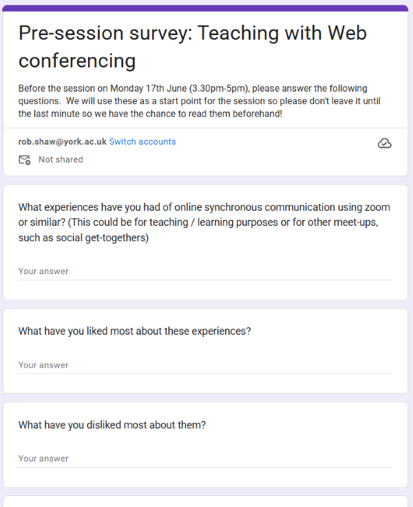
Padlet reworked as Google Form: survey questions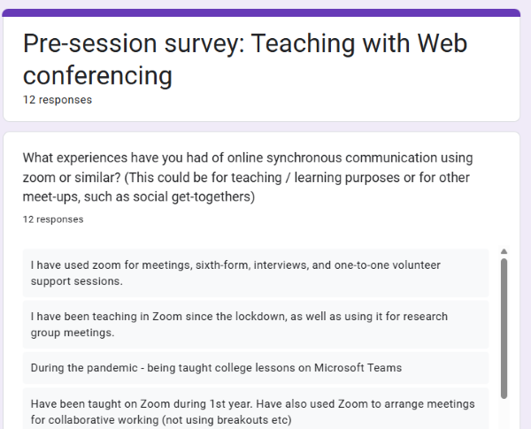
Padlet reworked as Google Form: responses for live reviewAlternative tool: Google Docs (very simple collection option)
- A Google Doc is a very simple option to collect questions/comments for use in a live session.
- All users with access can post and view contributions. Users can also delete content (although this can be restored).
- Allows text contributions, images and some other content types.
- Contributors are not explicitly identified, but use is not technically anonymous. Content is immediately visible to all users with access.
- Present Doc on screen or participants can review on their device for review. You or other users can also directly respond to contributions.
- Maximum 100 synchronous contributors. May get messy if there are lot of users editing the Doc simultaneously.
Reworking the example Padlet
A Padlet in the same format as the above example was used to gather experiences of online teaching for needs analysis before a training session. Google Docs is a lightweight solution that could replace this to collect questions either in advance or during a session for live review. Create a Doc, add question(s) if needed. Give participants Edit access so they can contribute. To review, you can screenshare or users can review on their devices.
Example Padlet: fully asynchronous Q&A forum
This Week 1 Q&A Padlet uses the Wall format to allow students to submit questions anonymously (to other students and also to the lecturer). Students post their question and the lecturer comments on it to reply. Students can also comment on posts if they wish.
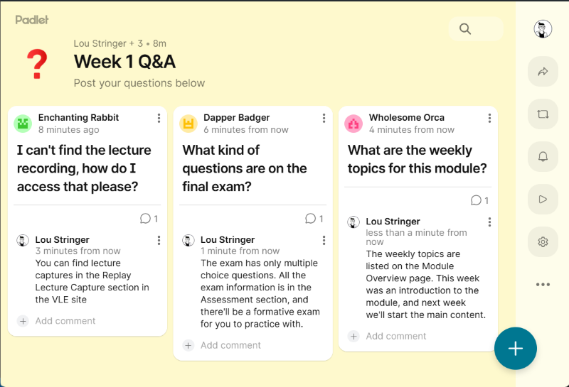
Alternative tool: Ultra Discussion (within Ultra VLE sites)
- The Ultra Discussion tool can be used for discussion boards and Q&A forums.
- Requires an Ultra VLE site accessible to the participants (eg. a module site). All enrolled users can access the Discussion, post and read other contributions.
- There have been lots of improvements to this tool during 2025; it's now possible to allow anonymous posting and subscribe to be notified of new posts.
- Allows posting and commenting, and supports a range of content types; text, links, images, embedded YouTube videos etc.
Reworking the example Padlet
For use in modules, the Ultra Discussion tool is the most appropriate tool to replace this Padlet. Create a Discussion in the relevant materials folder in your VLE site and add some instructions. In settings, click Allow anonymous responses and replies. Students can post their questions either anonymously or non-anonymously.
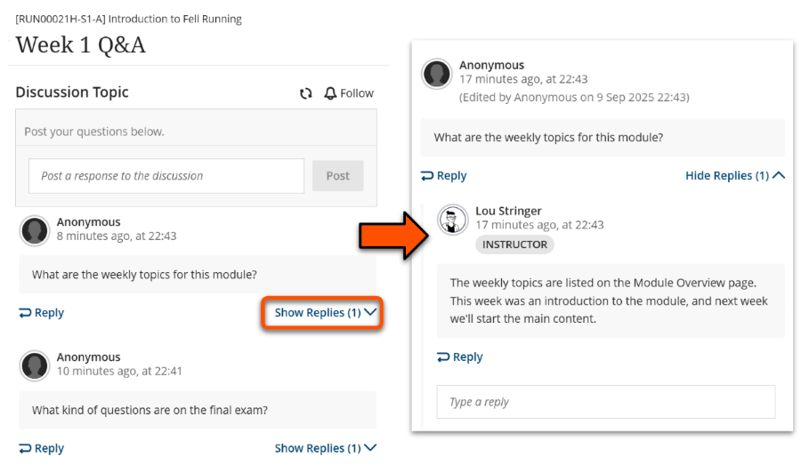
Alternative tool: Google Docs (for other uses)
- A Google Doc can be used for Q&As.
- Shareable across the University or more widely, so suitable for non-module use where there is not an Ultra VLE site. All users with access can post and view contributions.
- Allows text contributions, images and some other content types. Note that other users can delete content (although this can be restored).
- Contributors are not explicitly identified, but use is not technically anonymous. Content is immediately visible to all users with access.
- It's not possible to receive notifications when questions are posted.
Reworking the example Padlet
For use outside modules or other Ultra VLE sites, A Google Doc could replace the Q&A Padlet. Create a Google Doc, share it appropriately with participants and monitor for questions.
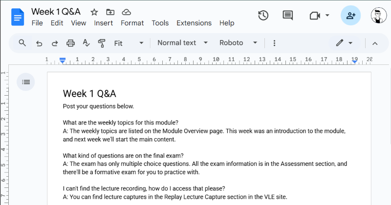
Gathering student work
Padlet is often used to collect outputs of individual or groupwork to be shared with the wider group. Padlets commonly use the Column or Wall format, but there are many options for this use case. Work is shared with the wider group, either for in-session or asynchronous review or reference. In some cases students or staff comment on contributions.
Example use cases include:
- completing specific tasks, eg. find an example of a journal paper or artefact, treasure hunt etc.
- providing a space for collaborative in-session work
- collating a range of student-curated materials: links, images, files etc.
- create a poster
Example Padlet: individual student-curated examples
In this Exploring policy research Padlet, each group has a separate Column format Padlet with headings for various types of policy research (eg. Government, think tanks, academic etc.). Within the group, each student finds and summarises a piece of research for each column, providing a link or a file of the full research document. Other students can view and commment on all contributions.
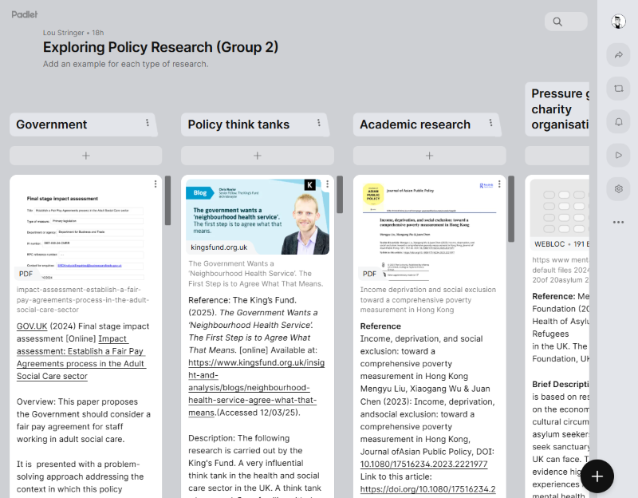
Example: Padlet to gather student-curated examplesAlternative tool: Ultra Discussion (within VLE site)
- The Ultra Discussion tool can be very useful to collect outputs from specific tasks, such as finding or summarising an example.
- Requires an Ultra VLE site accessible to the participants (eg. a module site).
- Allows posting and commenting on others' posts, and supports a range of content types; text, links, images, embedded YouTube videos etc.
- Discussions can be visible to all students, or can be split for specific groups.
- It is possible to allow anonymous posting, if desired.
Reworking the example Padlet
The Ultra Discussion tool is likely the best tool to replace this Padlet, as it's easy to access with other module materials and the research examples are available to refer to later. Create a Discussion in the relevant materials folder in your VLE site and add a starter post with each column heading. Students add their contributions to the relevant post.
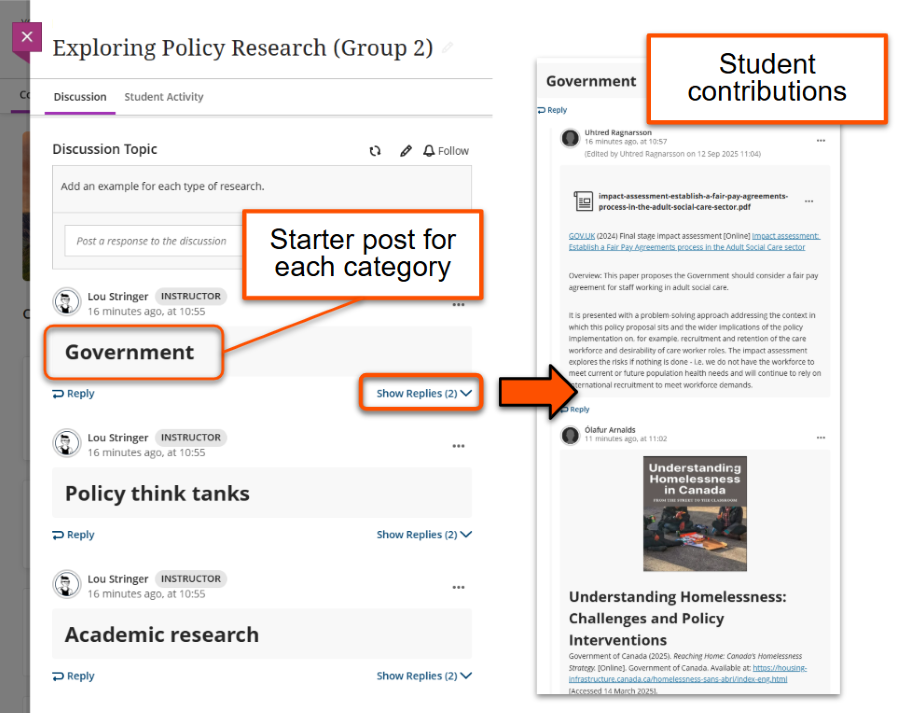
Example Padlet: collaborative in-session groupwork
In this Breakout groups: Renewable energy options Padlet in Column format, each group has a different energy type to research together. They post their work in their group's column, with one post per point. This could be similarly achieved in a Wall Padlet for each group.
This is one of Padlet's own example use cases: Breakout groups Padlet example
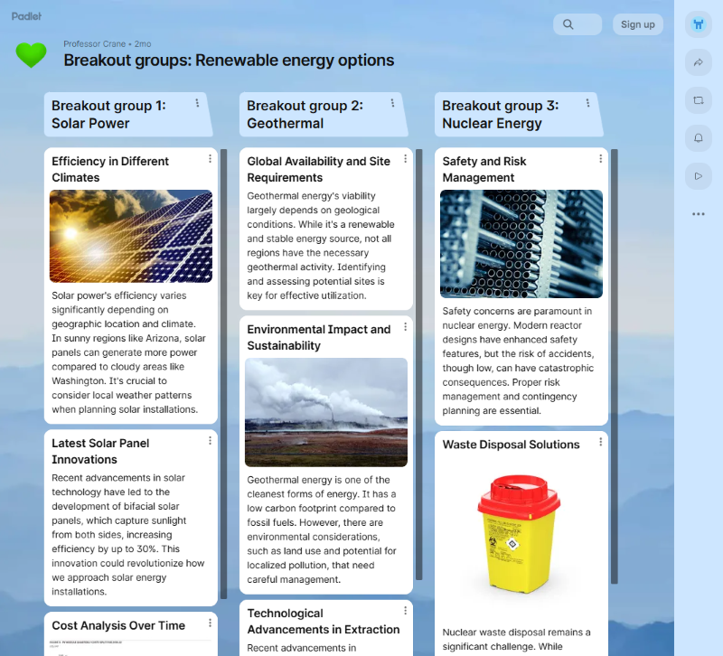
Example: Padlet for synchronous collaborationAlternative tool: Google Slides (incorporating visual elements)
- Google Slides is a good tool for collaborative work, especially with a visual aspect.
- All students can work in the same Slides deck with 1+ slide per group, or each group can have their own Slides deck.
- Supports a range of content: text, images, charts, links to external resources, video, audio etc.
- Can be reviewed while students are working, on screen for plenary and retained for future reference.
- Has the usual Google sharing options: specific users, University of York or Public. Users will need Edit access to contribute, but can change to Viewer access after the task to lock down content.
- Maximum 100 synchronous contributors. May get messy if there are lot of users editing the Slides simultaneously.
Reworking the example Padlet
To incorporate visual elements in a poster style, Google Slides is a useful and relatively simple option to replace this Padlet. Create a Slides document and add one slide per group, or one Slides document per group. Give students edit access and they work on their own devices. Can be presented on screen for plenary review if desired.
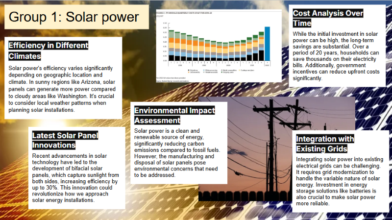
Alternative tool: Google Docs (simple text-based content)
- A Google Doc is a good tool for text-based collaborative work.
- Useful for lightweight content: add text and images directly, and links to files and videos.
- Presentation and layout is much more restrictive than in Ultra VLE sites or Google Sites.
- Document outline/table of contents built automatically using heading structure.
- Can be reviewed while students are working, on screen for plenary and retained for future reference.
- Has the usual Google sharing options: specific users, University of York or Public. Users will need Edit access to contribute, but can change to Viewer access after the task to lock down content.
- Maximum 100 synchronous contributors. May get messy if there are lot of users editing the Slides simultaneously.
Reworking the example Padlet
For a text-based report, Google Docs is a useful and very simple option to replace this Padlet. Create a Doc and add one page per group, or one Doc per group. Give students edit access and they work on their own devices. Can be presented on screen for plenary review if desired.
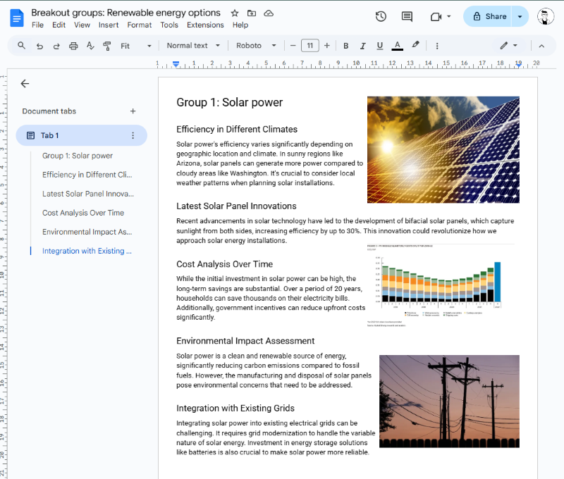
Staff-curated resources
Padlet is sometimes used to provide static materials and resources, such as:
- weekly lecture slides, tasks and reading items
- links to additional or extension resources
- careers or academic skills resources
- bulletin boards
In this use case, users access resources but do not contribute themselves.
Example Padlet: teaching materials
Tip
Please use your VLE site! Teaching materials should be provided directly within the module's Ultra VLE site. Reading items must be provided on the Leganto Reading List. Do not provide module materials via platforms, eg. Google Sites.
This archive Economic Data Analysis - Resources Padlet used the Column format to present weekly module materials, containing:
- an introductory resource: article, link, YouTube video etc.
- lecture slides in PPT (with PDF slides on the VLE site)
- post-lecture tasks: reading items, VLE quizzes etc.
- uploaded PDFs of reading items
This was well organised and guided students through the content, but there are there are general problems presenting teaching materials in Padlet:
- Padlet require lots of scrolling, may have contrast issues, and don't allow users to select text. This makes it difficult to use for many users.
- Materials in a Padlet take students outside the module VLE site. This causes difficulties for some users, and is generally unpopular.
- Uploaded PDFs are problematic in terms of copyright and accessibility, amongst other issues. Readings should be added to the Reading List instead.
Once Ultra VLE sites and the VLE Site Design Principles were adopted, this Padlet was remade directly within the module site and reading items added to the Reading List.
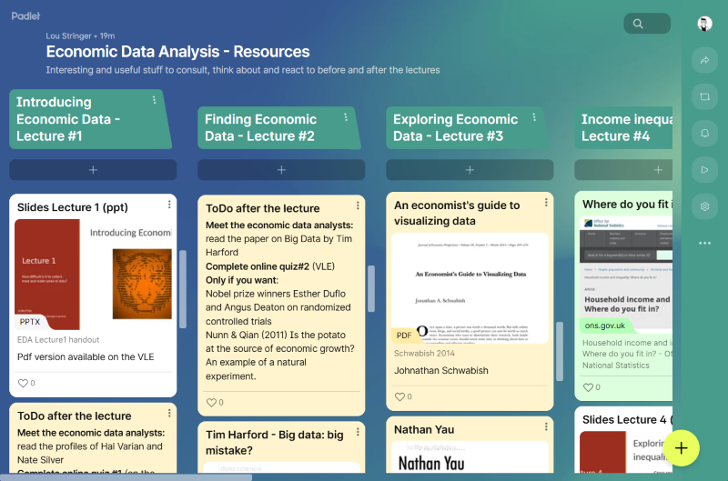
Required tool for module materials: Ultra VLE site
- The Document page type is the best option for providing most module materials. This uses drag-and-drop content blocks in a flexible layout to easily add text, images, video, files and more. Use column titles as section headings or an individual document.
- Lecture slides and other files can be uploaded with a Document to integrate with other content, or as standalone items.
- Panopto and YouTube video content can be embedded within a Document.
- Students can use the Ally Alternative Formats tool to convert and download content in a way that works for them, and you can use the Accessibility Report to identify and fix issues.
- Do not upload or directly link to reading items. Use the Reading List instead (see below).
- Use your Departmental template materials sections; in most cases weekly sections or Documents.
Reworking the example Padlet
All non-reading item content should be added to the module Ultra VLE site. Add items from each weekly column to the relevant template weekly materials section. Most content is best added into a Document: overview, tasks, slides, details of readings etc. Add content such as Discussions and Quizzes as separate items within the weekly section, so that all weekly content is collated together. Once complete, remove the Padlet from the site.
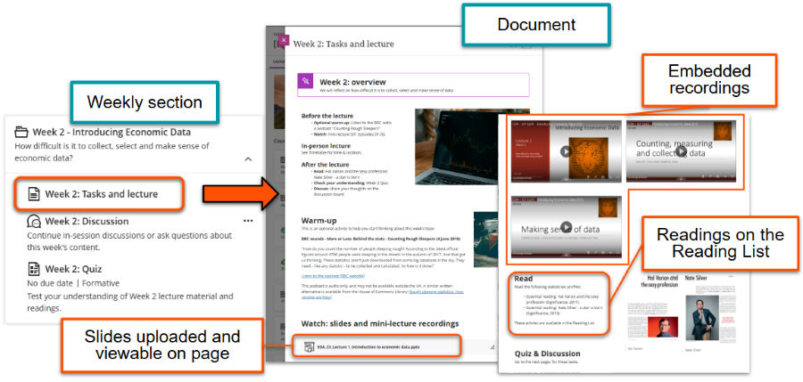
Required tool for reading items: Leganto Reading List
From 2025/26, it is University policy that all module readings must be provided through the Leganto Reading List tool. This collates all readings in one place and allows direct access to digital items via the University single-sign-on.
Warning
Do not directly upload reading items to your Ultra VLE site, or link to them in Google Drive etc.
Reworking the example Padlet
Instead of adding resources to the Padlet, add them to the module Reading List. To use the tool effectively:
- tag each item as Essential, Recommended or Background to help students prioritise and manage their workload.
- aid navigation by using the same structure as your VLE site. In most cases this should be weekly sections.
- use the Alternative Format Request (SSP) tag to identify items for the Library staff to convert to digital format for students who can't access printed text.
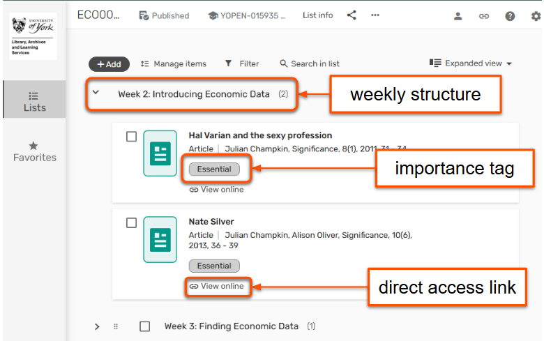
Example Padlet: non-teaching resources
This You and Your Career Padlet is one of a series of Column Padlets providing content as part of the York Law School's Careers & Development Programme. They contain a range of resource types, including:
- text content within the Padlet itself
- video demonstrations
- various useful files (PDF, Word etc.) and links
The Padlets are hosted within an ongoing VLE site for all current Law students.
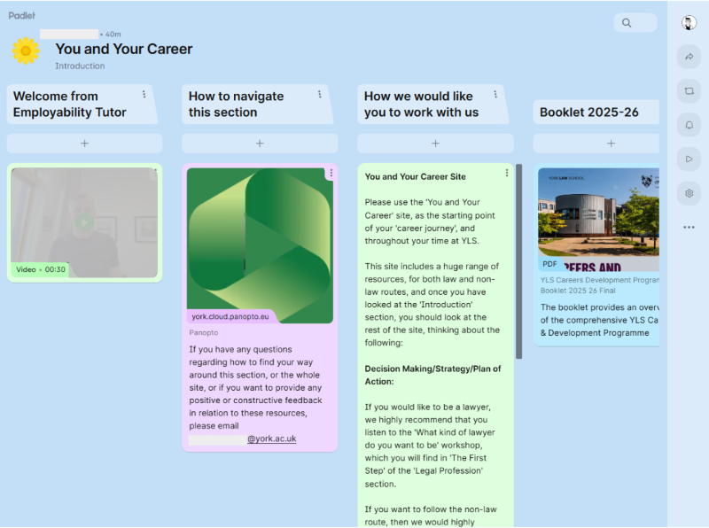
Alternative tool: Ultra VLE site (teaching-aligned content, current students)
- An Ultra VLE site is a suitable tool for providing 'teaching-aligned' content (eg. academic skills, career planning, lab skills), accessible in the VLE with module sites.
- Contact us to set up a new Ultra VLE site if needed.
- The Document page type is the best option for providing most resources. This uses drag-and-drop content blocks in a flexible layout to easily add text, images, video, files and more.
- Files can be uploaded with a Document to integrate with other content, or as standalone items
- Panopto and YouTube video content can be embedded within a Document.
- Students can use the Ally Alternative Formats tool to convert and download content in a way that works for them, and you can use the Accessibility Report to identify and fix issues.
- Usable with current students only.
Reworking the example Padlet
As the Padlet is already embedded in an Ultra VLE site and content is aimed at current students, the best alternative is to migrate the content from the Padlet to the VLE site itself. Create a Document (aka VLE page), Use the column titles as section headings and add the text, images, videos and files etc. Once complete, remove the Padlet from the site.
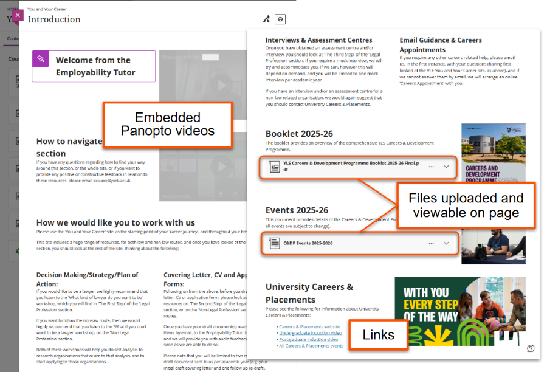
Alternative tool: Google Site (other content, staff, external users)
- A Google Site is a simple website publishing tool that's useful to provide non-teaching related content, or any content for staff or external users.
- Layout is very flexible, using a range of drag-and-drop 'content blocks' and collapsible sections. Various themes are available to style content.
- Supports many content types, including text, images, embedded Google tools (Docs, Slides, YouTube etc.). External files (eg. PDF, Word) can't be added directly, but can be linked/embedded from Google Drive.
- Has the usual Google sharing options: specific users, University of York or Public.
- There is no access for students to directly download the content, or native accessibility tools within the Site.
Reworking the example Padlet
If access is needed for external users (eg. alumni), Google Sites could be used to present non-teaching content. This is also a good option for staff-facing content. Create a Google Site, add the text, images, embedded videos etc. You may need to upload files to Google Drive to add them. Once complete, publish the site and share with users (viewer access).
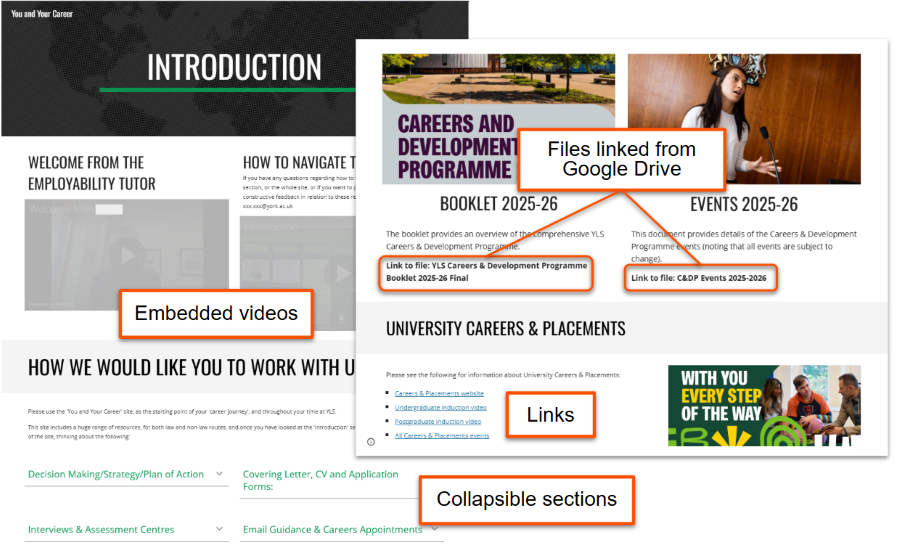
Alternative tool: Google Docs (very simple option)
- A Google Doc is a very simple option to present curated non-teaching resources.
- Useful for lightweight content: add text and images directly, and links to files in Google Drive and videos in Panopto/YouTube.
- Presentation and layout is much more restrictive than in Ultra VLE sites or Google Sites.
- Document outline/table of contents built automatically using heading structure.
- Has the usual Google sharing options: specific users, University of York or Public. Give users View only access.
Reworking the example Padlet
While basic, Google Docs could be an option to quickly and simply convert non-teaching content from a Padlet. Create a Google Doc, add the text and images, and link to videos/files etc. Once complete, share the Doc with users (viewer access).
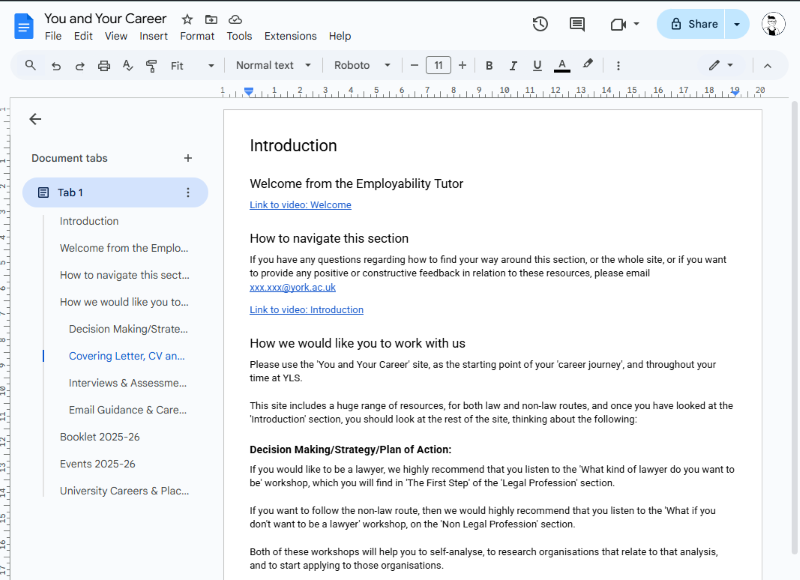
Curated Maps
The Map format Padlet is sometimes used for icebreaker activities, or location-based tasks. For example:
- favourite museum you've visited
- where your favourite author/painter etc. is from
- finding geographical examples
Example Padlet: location-based icebreaker
In this What's the most exciting place you've lived or worked? Padlet, students add a pin at their chosen location, then add a text comment and upload a representative image.
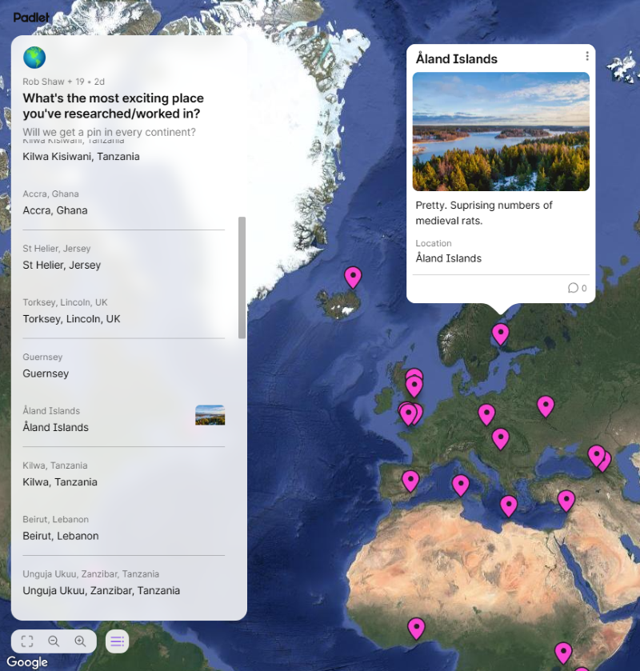
Alternative tool: Google Maps
- Google’s My Maps tool allows users to build shareable, curated maps.
- Integrates with Google Drive.
- Has the usual Google sharing options: specific users, University of York or Public. Users will need Edit access to contribute, but can change to Viewer access after the task to lock down content.
Reworking the example Padlet
Google Maps is a completely analogous tool to replace this Padlet, with almost identical workflow and final results. Create a Map, share with students and allow them to select their locations.
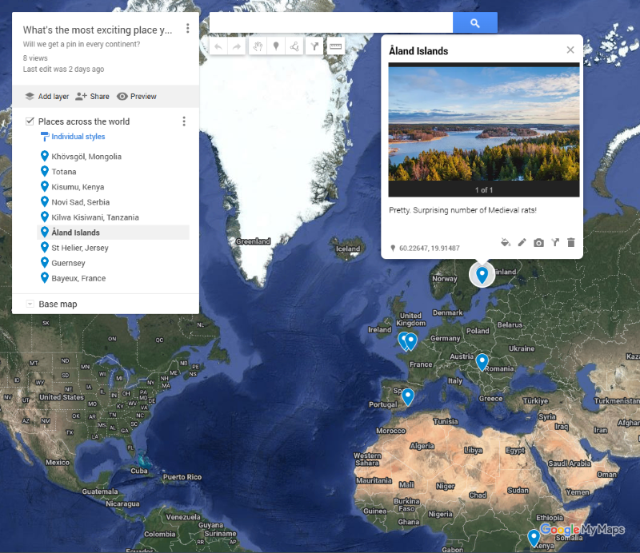
Journal or reflection space
The Ultra Journal tool could be useful in this context. This is a private space for either an individual or a group of students and the teaching staff. Staff can comment on student work.
Timelines
Padlet is sometimes used to create a Timeline, where sequential information is displayed horizontally. This usage can be problematic; it requires a lot of horizontal scrolling, and it's usually not possible to see all information at once. A text-based presentation is generally preferable.
Reworking Timeline Padlets
- In most cases, a document with good heading structure is a good way to present sequential information. This could be directly within a VLE site, in a Word document or Google Doc.
- If a specific timeline format is required, timelines can be built in Microsoft PowerPoint, and then uploaded to the VLE.
--- -->